01 · 外套、上装、裤装与裙装 (Outerwear, Tops, Pants & Dresses)
| 单词 (英 / 法性数完整形态) | 音标 (英 / 法 IPA) | 中文释义 | 英文定义 (WordNet) | 词频 | 实物配图 |
|---|---|---|---|---|---|
| uniforml'uniformen.f.🇬🇧 uniform | /'ju:nifɒ:m//ynifɔʁm/ | n. 制服 | clothing of distinctive design worn by members of a particular group as a means of identification | 4.33 | 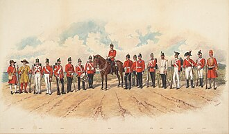 |
| jacketle blousonn.m.🇬🇧 jacket | /'dʒækit//bluzɔ̃/ | n. 夹克, 外套, 护套 | a short coat | 4.32 | 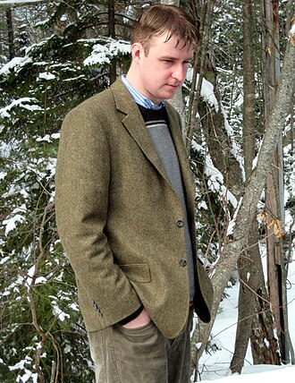 |
| maskla masquen.f.🇬🇧 mask | /mæsk//mask/ | n. 面具, 假面具, 掩饰, 石膏面模 | a covering to disguise or conceal the face | 4.31 | 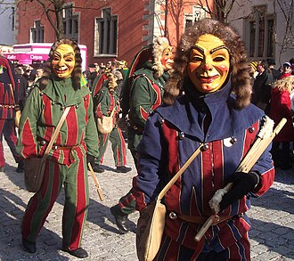 |
| stolel'étolen.f.🇬🇧 stole | /stәul//etɔl/ | n. 女用披肩, 圣衣 | a wide scarf worn about their shoulders by women | 4.21 | |
| wraple wrapn.m.🇬🇧 wrap | /ræp//wʁa/ | n. 外套, 围巾, 包裹物, 限制, 约束, 秘密, 换行 | cloak that is folded or wrapped around a person | 4.2 | |
| costumela costumen.f.🇬🇧 costume | /'kɒstju:m//kɔstym/ | n. 装束, 服装 | the attire worn in a play or at a fancy dress ball | 4.18 | 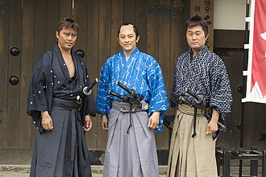 |
| derbyle chapeau melonn.m.🇬🇧 derby | /'dɑ:bi//ʃapo məlɔ̃/ | n. 德比(英国中部都市), 德比赛马, 大赛马 | a felt hat that is round and hard with a narrow brim | 4.1 | |
| laundryle lavagen.m.🇬🇧 laundry | /'lɒ:ndri//lavaʒ/ | n. 洗衣店, 洗好的衣服, 洗涤 | garments or white goods that can be cleaned by laundering | 4.06 | 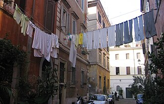 |
| underwearle dessousn.m.🇬🇧 underwear | /'ʌndәwєә//dəsu/ | n. 内衣 | undergarment worn next to the skin and under the outer garments | 3.96 | 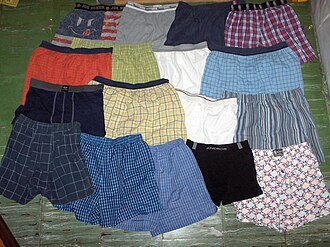 |
| turtlela tortuen.f.🇬🇧 turtle | /'tә:tl//tɔʁty/ | n. 海龟 | a sweater or jersey with a high close-fitting collar | 3.91 | |
| brale soutien-gorgen.m.🇬🇧 bra | /brɑ://sutjɛ̃gɔʁʒ/ | n. 奶罩 | an undergarment worn by women to support their breasts | 3.85 | 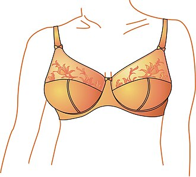 |
| athletic supporter复合词la coquillen.f.🇬🇧 athletic supporter | /æθˈletɪk səˈpɔ:tə//kɔkij/ | （男运动员等保护生殖器的）护身, 护裆 | a support for the genitals worn by men engaging in strenuous exercise | 3.79 | |
| gathered skirt复合词la jupen.f.🇬🇧 gathered skirt | /'gaðəd skә:t//ʒyp/ | 收裥裙；打裥裙 | a skirt whose fabric is drawn together around the waist | 3.79 |  |
| sack coat复合词le manteaun.m.pl. manteaux🇬🇧 sack coat | /sæk kəut//mɑ̃to/ | 男式便装短上衣；男便装上衣 | man's hiplength coat with a straight back; the jacket of a suit | 3.78 |  |
| sweaterle chandailn.m.🇬🇧 sweater | /'swetә//ʃɑ̃daj/ | n. 毛衣, 毛线衫, 运动衫, 出汗者 | a crocheted or knitted garment covering the upper part of the body | 3.78 | 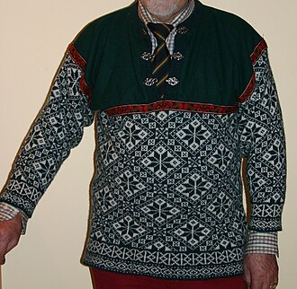 |
| cowboy hat复合词le chapeau de cow-boyn.m.🇬🇧 cowboy hat | /ˈkaʊˌbɔɪ hæt//ʃapo də kow bɔj/ | n. 牛仔帽, 宽边高呢帽 | a hat with a wide brim and a soft crown; worn by American ranch hands | 3.77 | 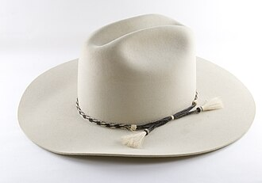 |
| bomber jacket复合词le blouson d'aviateurn.m.🇬🇧 bomber jacket | /ˈbɔmə ˈdʒækit//bluzɔ̃ davjatœʁ/ | n. （腰部和袖口有松紧带的）短夹克 | a jacket gathered into a band at the waist | 3.75 | 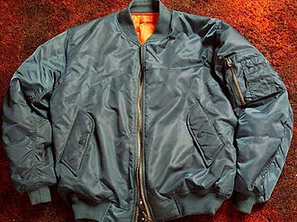 |
| gownla roben.f.🇬🇧 gown | /gaun//ʁɔb/ | n. 睡衣, 法衣, 大学全体师生 | a woman's dress, usually with a close-fitting bodice and a long flared skirt, often worn on formal occasions | 3.75 | 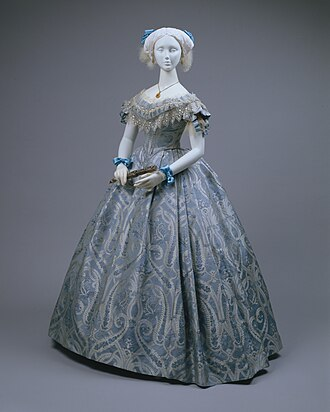 |
| ball gown复合词la robe de baln.f.🇬🇧 ball gown | /bɔ:l ɡaun//ʁɔb də bal/ | n. 舞会袍 | the most formal gown; worn to a ball | 3.73 | 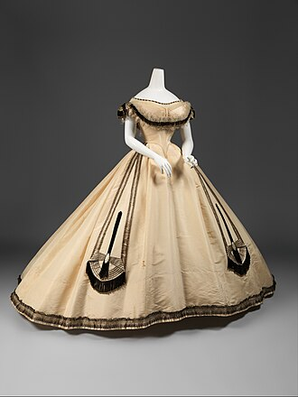 |
| dressing gown复合词la robe de chambren.f.🇬🇧 dressing gown | /ˈdresiŋ ɡaun//ʁɔb də ʃɑ̃bʁ/ | 晨衣 | a robe worn before dressing or while lounging | 3.73 | 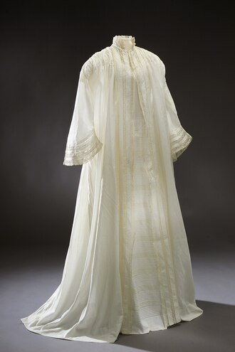 |
| hosele tuyaun.m.pl. tuyaux🇬🇧 hose | /hәuz//tɥijo/ | n. 水管, 橡皮软管, 长统袜 | socks and stockings and tights collectively (the British include underwear) | 3.73 | 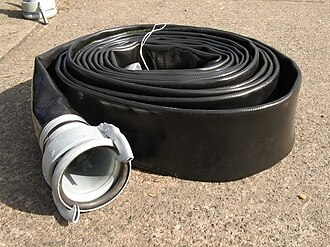 |
| sailor suit复合词l'uniforme de marinn.f.🇬🇧 sailor suit | /ˈseilə sju:t//ynifɔʁm də maʁɛ̃/ | n. 男童水手装, 海军装 | a boy's ensemble; copied from a sailor's uniform | 3.73 | |
| vestle giletn.m.🇬🇧 vest | /vest//ʒilɛ/ | n. 背心, 汗背心 | a man's sleeveless garment worn underneath a coat | 3.73 | 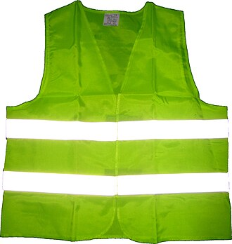 |
| apparelle vêtementn.m.🇬🇧 apparel | /ә'pærәl//vɛtmɑ̃/ | n. 衣服, 外表 | clothing in general | 3.72 |  |
| bathing suit复合词le maillotn.m.🇬🇧 bathing suit | /'beiðiŋ sju:t. su:t//majo/ | n. 游泳衣 | tight fitting garment worn for swimming | 3.72 |  |
| dressing sack复合词le sacn.m.🇬🇧 dressing sack | /'dresiŋ sæk//sak/ | （女士休息、梳妆、打扮等时穿的）宽大短上衣，理发罩衫 | a woman's loose jacket; worn while dressing | 3.72 | |
| evening gown复合词la robe de soiréen.f.🇬🇧 evening gown | /'i:vniŋ gaun//ʁɔb də swaʁe/ | 女子夜礼服 | a gown for evening wear | 3.72 | |
| support hose复合词le tuyaun.m.pl. tuyaux🇬🇧 support hose | /səˈpɔ:t həuz//tɥijo/ | 弹力长袜 | elasticized stocking intended to reduce pressure on the veins of the leg (as in case of varicose veins) | 3.72 | 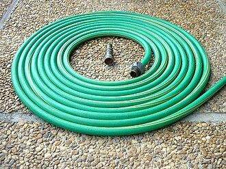 |
| wedding gown复合词la robe de mariéen.f.🇬🇧 wedding gown | /'wediŋ gaun//ʁɔb də maʁje/ | un. 新娘服 | a gown worn by the bride at a wedding | 3.72 |  |
| kid glove复合词le gantn.m.🇬🇧 kid glove | /kid ɡlʌv//gɑ̃/ | 小山羊皮白手套 | a glove made of fine soft leather (as kidskin) | 3.71 | 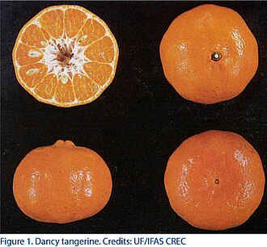 |
| polo shirt复合词le polon.m.🇬🇧 polo shirt | /ˈpəʊləʊ ʃə:t//pɔlo/ | n. 球衣; 保罗衫 | a shirt with short sleeves designed for comfort and casual wear | 3.71 | 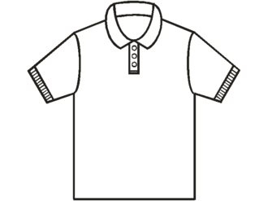 |
| tea gown复合词la roben.f.🇬🇧 tea gown | /ti: gaun//ʁɔb/ | 茶会女礼服 | a long loose-fitting gown formerly popular for wear at afternoon tea | 3.71 | 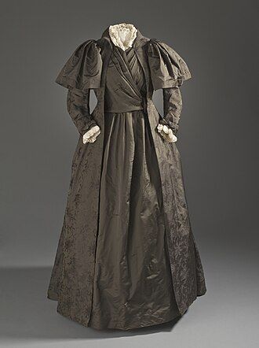 |
| mackle mackn.m.🇬🇧 mack | /mæk//mak/ | n. 防水胶布, (英)雨衣 | a waterproof raincoat made of rubberized fabric | 3.7 | |
| academic gown复合词la robe universitaire en francen.f.🇬🇧 academic gown | /ˌækəˈdemik ɡaun//ʁɔb ynivɛʁsitɛʁ ɑ̃ fʁɑ̃s/ | 学（位）袍 | a gown worn by academics or judges | 3.69 |  |
| wearing apparel复合词le vêtementn.m.🇬🇧 wearing apparel | /ˈweərɪŋ əˈpærəl//vɛtmɑ̃/ | n. 衣服，服装 | clothing in general | 3.69 |  |
| scarfl'écharpen.f.🇬🇧 scarf | /skɑ:f//eʃaʁp/ | n. 围巾, 头巾, 领带, 领巾, 嵌接 | a garment worn around the head or neck or shoulders for warmth or decoration | 3.68 | 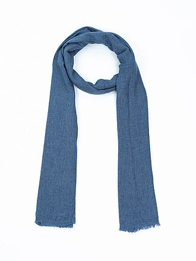 |
| slack suit复合词le tailleur-pantalonn.m.🇬🇧 slack suit | /slæk sju:t. su:t//tajœʁpɑ̃talɔ̃/ | 便装 | casual dress consisting of slacks and matching jacket | 3.67 |  |
| veilla voilen.f.🇬🇧 veil | /veil//vwal/ | n. 面纱, 面罩, 借口, 幕, 帐, 遮蔽物 | a garment that covers the head and face | 3.66 | |
| ballet skirt复合词le tutun.m.🇬🇧 ballet skirt | /ˈbælei skə:t//tyty/ | 芭蕾舞短裙 | very short skirt worn by ballerinas | 3.65 | 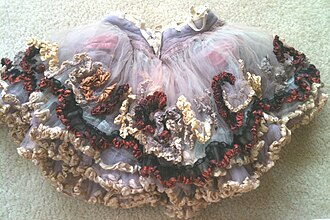 |
| shin guard复合词la protège-tibian.f.🇬🇧 shin guard | /ʃin gɑ:d//pʁɔtɛʒtibja/ | 护胫 | a stiff protective garment worn by hockey players or a catcher in baseball to protect the shins | 3.65 | 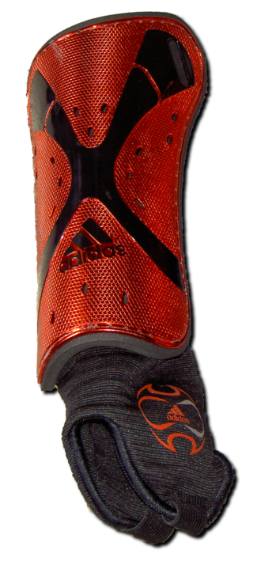 |
| wigla perruquen.f.🇬🇧 wig | /wig//peʁyk/ | n. 假发, 斥责 | hairpiece covering the head and made of real or synthetic hair | 3.64 | 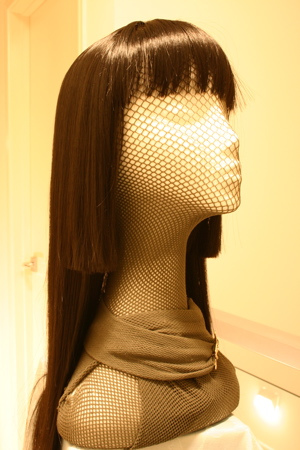 |
| accessoryl'accessoiren.f.🇬🇧 accessory | /әk'sesәri//akseswaʁ/ | n. 附件, 零件, 附加物, 从犯, 同谋 | clothing that is worn or carried, but not part of your main clothing | 3.63 | 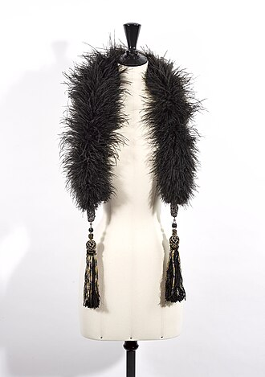 |
| bikini pants复合词le caleçonn.m.🇬🇧 bikini pants | /bi'ki:ni pænts//kalsɔ̃/ | [复数]比基尼式女三角装[亦作 bikini briefs] | small and tight-fitting underpants; worn by women | 3.63 | |
| bathing cap复合词le bonnet de bainn.m.🇬🇧 bathing cap | /'beiðiŋ kæp//bɔnɛ də bɛ̃/ | n. 游泳帽 | a tight-fitting cap that keeps hair dry while swimming | 3.62 |  |
| batting helmet复合词la casquen.f.🇬🇧 batting helmet | /'bætiŋ 'helmit//kask/ | [棒球]击球员戴的头盔 | a helmet worn by the batter in baseball | 3.62 | |
| chest protector复合词le défenseurn.m.🇬🇧 chest protector | /tʃest prә'tektә//defɑ̃sœʁ/ | 护胸 | protective garment consisting of a pad worn in baseball by catchers and by football players | 3.62 | |
| elbow pad复合词le comprimén.m.🇬🇧 elbow pad | /ˈelbəu pæd//kɔ̃pʁime/ | [体]护肘 | protective garment consisting of a pad worn over the elbow by football and hockey players | 3.62 | 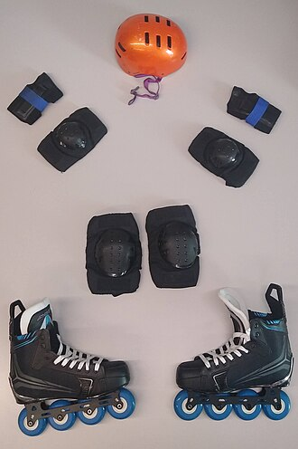 |
| garrison cap复合词le calotn.m.🇬🇧 garrison cap | /ˈɡærisn kæp//kalo/ | 船形帽 | a wedge-shaped wool or cotton cap; worn as part of a uniform | 3.61 |  |
| sockla chaussetten.f.🇬🇧 sock | /sɒk//ʃosɛt/ | n. 短袜, 鞋垫, 一击 | hosiery consisting of a cloth covering for the foot; worn inside the shoe; reaches to between the ankle and the knee | 3.61 | 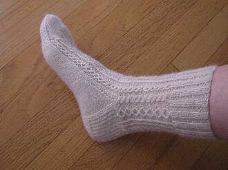 |
| trench coat复合词le trenchn.m.🇬🇧 trench coat | /trentʃ kəut//tʁɑ̃ʃ/ | n. 军用防水短上衣 | a military style raincoat; belted with deep pockets | 3.61 | |
| garmentle vêtementn.m.🇬🇧 garment | /'gɑ:mәnt//vɛtmɑ̃/ | n. 衣服, 衣装, 外表 | an article of clothing | 3.59 |  |
| bathing costume复合词le maillotn.m.🇬🇧 bathing costume | /'beiðiŋ 'kɒstju:m//majo/ | n. 游泳衣 | tight fitting garment worn for swimming | 3.56 | |
| foundation garment复合词le vêtementn.m.🇬🇧 foundation garment | /faunˈdeiʃən ˈɡɑ:mənt//vɛtmɑ̃/ | n. 妇女紧身胸衣 | a woman's undergarment worn to give shape to the contours of the body | 3.56 | 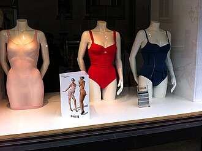 |
| cartridge belt复合词la courroien.f.🇬🇧 cartridge belt | /'kɑ:tridʒ belt//kuʁwa/ | 子弹带 | a broad belt with loops or pockets for holding ammunition | 3.55 | 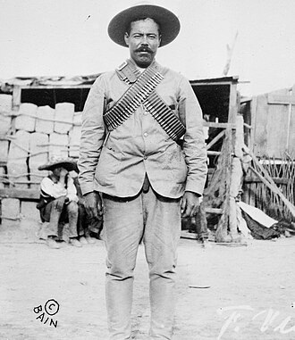 |
| trunk hose复合词la chaussen.f.🇬🇧 trunk hose | /trʌŋk həuz//ʃos/ | n. 宽松短罩裤; 大脚短裤 | puffed breeches of the 16th and 17th centuries usually worn over hose | 3.55 | |
| donkey jacket复合词le blousonn.m.🇬🇧 donkey jacket | /ˈdɔŋki ˈdʒækit//bluzɔ̃/ | n. 防雨工作服 | a short thick jacket; often worn by workmen | 3.54 | 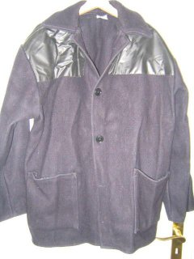 |
| lingeriela lingerien.f.🇬🇧 lingerie | /,lænʒә'ri:, 'læn-//lɛ̃ʒʁi/ | n. 女式内衣 | women's underwear and nightclothes | 3.53 | 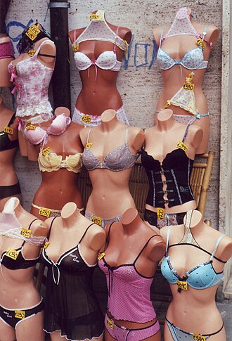 |
| denimle jeann.m.🇬🇧 denim | /'denim//dʒin/ | n. 斜纹粗棉布, 牛仔布, 劳动布, (非正式)工作服, 工装裤 | (usually plural) close-fitting trousers of heavy denim for manual work or casual wear | 3.52 | 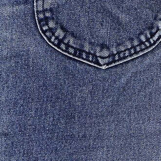 |
| jockey cap复合词le bonnetn.m.🇬🇧 jockey cap | /'dʒɒki kæp//bɔnɛ/ | (赛马骑师戴的)轻便鸭舌帽 | a cap with a bill | 3.52 | |
| lumber jacket复合词le bûcheronn.m.🇬🇧 lumber jacket | /'lʌmbә 'dʒækit//byʃʁɔ̃/ | 短夹克衫[亦称作 lumberjack] | a short warm outer jacket | 3.52 | 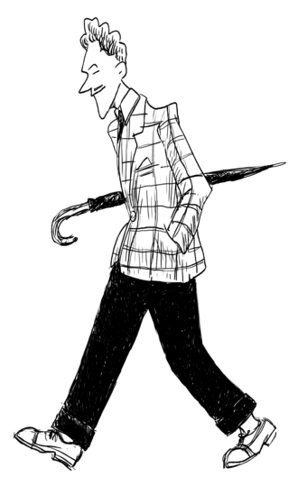 |
| robela roben.f.🇬🇧 robe | /rәub//ʁɔb/ | n. 宽松长袍, 礼服, 披肩, 覆盖物 | any loose flowing garment | 3.52 | 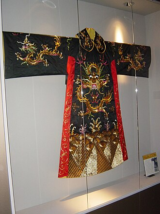 |
| weedsle weedn.m.🇬🇧 weeds | /wi:dz//w/ | n. 丧服 | a black garment (dress) worn by a widow as a sign of mourning | 3.52 |  |
| outer garment复合词le vêtementn.m.🇬🇧 outer garment | /ˈautə ˈɡɑ:mənt//vɛtmɑ̃/ | 外套 | a garment worn over other garments | 3.5 | 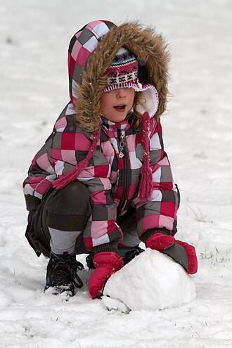 |
| attirele revêtirn.m.🇬🇧 attire | /ә'taiә//ʁəvɛtiʁ/ | n. 服装, 盛装 | clothing of a distinctive style or for a particular occasion | 3.49 | 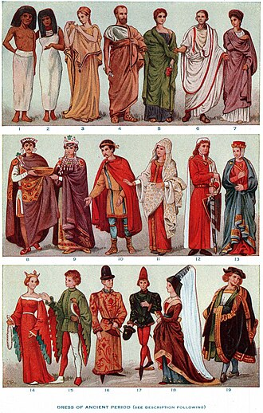 |
| diaperla couchen.f.🇬🇧 diaper | /'daiәpә//kuʃ/ | n. 尿布 | garment consisting of a folded cloth drawn up between the legs and fastened at the waist; worn by infants to catch excrement | 3.49 |  |
| opera cloak复合词la pelissen.f.🇬🇧 opera cloak | /ˈɔpərə kləuk//pəlis/ | n. （观剧或宴会时用的）夜礼服斗篷 | a large cloak worn over evening clothes | 3.49 | 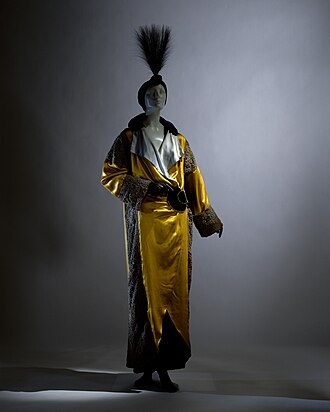 |
| stockingle basn.m.🇬🇧 stocking | /'stɒkiŋ//ba/ | n. 长袜 | close-fitting hosiery to cover the foot and leg; come in matched pairs (usually used in the plural) | 3.49 |  |
| batting glove复合词le gantn.m.🇬🇧 batting glove | /ˈbætiŋ ɡlʌv//gɑ̃/ | n. 击球手套 | a glove worn by batters in baseball to give a firmer grip on the bat | 3.48 | |
| body stocking复合词le collant de corpsn.m.🇬🇧 body stocking | /ˈbɔdi ˈstɔkiŋ//kɔlɑ̃ də kɔʁ/ | n. 上下相连的紧身衣裤 | a one-piece tight-fitting undergarment for women that covers the torso (and may have sleeves and legs) | 3.48 | 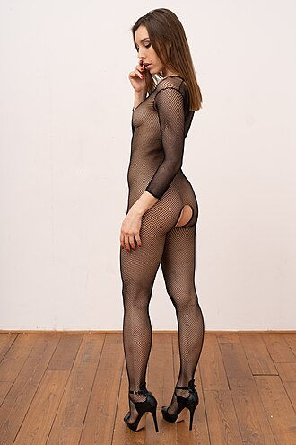 |
| protective garment复合词le vêtementn.m.🇬🇧 protective garment | /prəˈtektiv ˈɡɑ:mənt//vɛtmɑ̃/ | 防护衣服 | clothing that is intended to protect the wearer from injury | 3.48 | 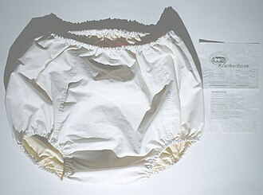 |
| pea jacket复合词le cabann.m.🇬🇧 pea jacket | /pi: ˈdʒækit//kabɑ̃/ | n. 水手穿的厚呢短大衣 | a sailor's heavy woolen double-breasted jacket | 3.47 |  |
| peaked cap复合词le képin.m.🇬🇧 peaked cap | /pikt kæp//kepi/ | 尖顶帽; 鸭舌帽 | a cap with a flat circular top and a visor | 3.46 | |
| shovel hat复合词la casquetten.f.🇬🇧 shovel hat | /'ʃʌvl hæt//kaskɛt/ | （教士等戴的）铲形宽边帽 | a stiff broad-brimmed hat with the brim turned up at the sides and projecting in front; worn by some clergymen in Britain | 3.46 | |
| stocking cap复合词le bonnet en tricotn.m.🇬🇧 stocking cap | /'stɒkiŋ kæp//bɔnɛ ɑ̃ tʁiko/ | 绒线帽 | a close-fitting woolen cap; often has a tapering tail with a tassel | 3.45 |  |
| bowler hat复合词le chapeau melonn.m.🇬🇧 bowler hat | /'bәulә hæt//ʃapo məlɔ̃/ | 圆顶礼帽 | a felt hat that is round and hard with a narrow brim | 3.44 | 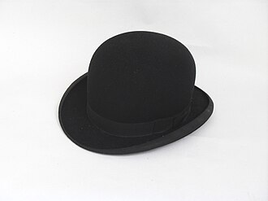 |
| swimming trunks复合词le maillot de bainn.m.🇬🇧 swimming trunks | /'swimiŋ trʌŋks//majo də bɛ̃/ | n. 泳裤 | swimsuit worn by men while swimming | 3.43 | 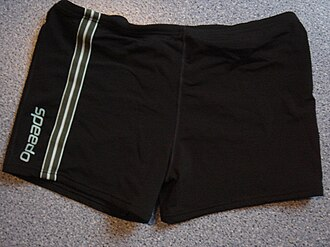 |
| drawersle caleçonn.m.🇬🇧 drawers | /drɔ:z//kalsɔ̃/ | n. 厨柜；内裤 | underpants worn by men | 3.42 |  |
| footwearla chaussuren.f.🇬🇧 footwear | /'fjtweә(r)//ʃosyʁ/ | n. 鞋类, 靴类 | clothing worn on a person's feet | 3.42 | 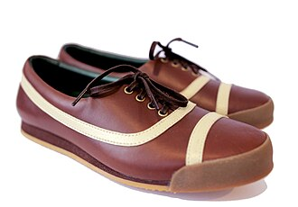 |
| brunch coat复合词le manteaun.m.pl. manteaux🇬🇧 brunch coat | /brʌntʃ kəut//mɑ̃to/ | n. 长到膝盖的家常服 | a woman's short housecoat or wrapper | 3.41 | |
| silk stocking复合词le basn.m.🇬🇧 silk stocking | /silk ˈstɔkiŋ//ba/ | n. 穿着华丽的人, 丝袜 | women's stockings made from a sheer material (nylon or rayon or silk) | 3.4 | |
| blousele chemisiern.m.🇬🇧 blouse | /blauz//ʃəmizje/ | n. 宽松的上衣 | a top worn by women | 3.38 | |
| apronle tabliern.m.🇬🇧 apron | /'eiprәn//tablije/ | n. 围裙 | a garment of cloth or leather or plastic that is tied about the waist and worn to protect your clothing | 3.36 | |
| bonnetle bonnetn.m.🇬🇧 bonnet | /'bɒnit//bɔnɛ/ | n. 软帽 | a hat tied under the chin | 3.35 | |
| cordsle cordn.m.🇬🇧 cords | /kɒ:ds//koʁ/ | n. 灯芯绒裤子 | cotton trousers made of corduroy cloth | 3.35 | 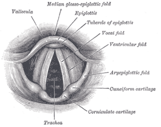 |
| abal'aban.m.🇬🇧 aba | /'ɑ:bә//aba/ | n. 宽大无袖长袍, 驼毛织物 | a loose sleeveless outer garment made from aba cloth; worn by Arabs | 3.32 | |
| reversible兼类词la réversiblen.f.🇬🇧 reversible | /ri'vә:sәbl//ʁevɛʁsibl/ | n. 双面可用织物 | a garment (especially a coat) that can be worn inside out (with either side of the cloth showing) | 3.32 |  |
| bridal gown复合词la robe de mariéen.f.🇬🇧 bridal gown | /ˈbraidl ɡaun//ʁɔb də maʁje/ | n. 新娘服装 | a gown worn by the bride at a wedding | 3.31 | 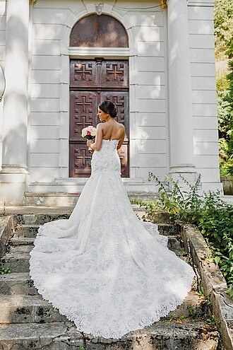 |
| tightsle collantn.m.🇬🇧 tights | /taits//kɔlɑ̃/ | n. 紧身衣裤 | skintight knit hose covering the body from the waist to the feet worn by acrobats and dancers and as stockings by women and girls | 3.29 | 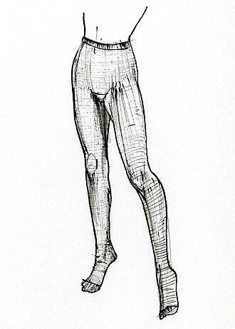 |
| wearable兼类词l'habillementn.m.🇬🇧 wearable | /'wєәrәbl//abijmɑ̃/ | n. 衣服 | a covering designed to be worn on a person's body | 3.29 |  |
| swimsuitle maillotn.m.🇬🇧 swimsuit | /'swimsju:t//majo/ | n. 游泳衣 | tight fitting garment worn for swimming | 3.28 |  |
| tamle tamn.m.🇬🇧 tam | /tæm//tam/ | n. 便帽（苏格兰人戴的） | a woolen cap of Scottish origin | 3.28 | 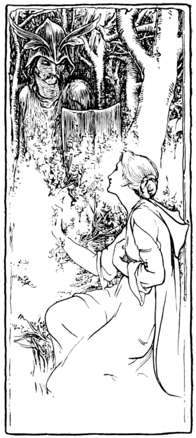 |
| blazerle blazern.m.🇬🇧 blazer | /'bleizә//blazɛʁ/ | n. 燃烧体, 颜色鲜明的上装, 宣布者 | lightweight single-breasted jacket; often striped in the colors of a club or school | 3.27 | |
| maxile maxin.m.🇬🇧 maxi | /'mæksi//maksi/ | n. 长大衣 | a long skirt ending below the calf | 3.26 | |
| bush jacket复合词la sahariennen.f.🇬🇧 bush jacket | /buʃ ˈdʒækit//saaʁjɛn/ | n. 衬衫式茄克衫 | a loose fitting jacket; resembles a shirt with four patch pockets and a belt | 3.24 | 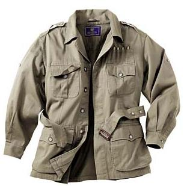 |
| hip pad复合词le comprimén.m.🇬🇧 hip pad | /hip pæd//kɔ̃pʁime/ | [体]护胯 | protective garment consisting of a pad worn by football and hockey players | 3.24 | 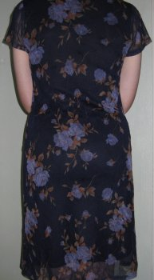 |
| picture hat复合词la casquetten.f.🇬🇧 picture hat | /ˈpiktʃə hæt//kaskɛt/ | n. （有羽毛等饰物的）女用阔边帽; 阔边花式 | a woman's dressy hat with a wide brim | 3.24 | |
| smoking jacket复合词le blousonn.m.🇬🇧 smoking jacket | /ˈsməʊkɪŋ ˈdʒækit//bluzɔ̃/ | n. 男子晚间在家穿的便服 | a man's soft jacket usually with a tie belt; worn at home | 3.24 | 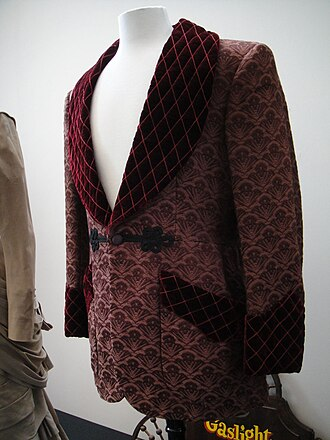 |
| sport shirt复合词le polon.m.🇬🇧 sport shirt | /spɒ:t ʃә:t//pɔlo/ | 运动衫 | a shirt with short sleeves designed for comfort and casual wear | 3.24 | 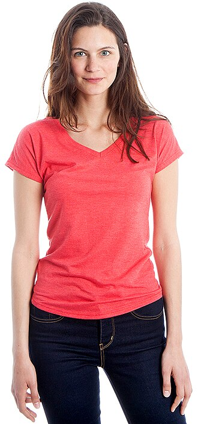 |
| sports jacket复合词le blazern.m.🇬🇧 sports jacket | /spɔ:ts ˈdʒækit//blazɛʁ/ | n. 粗呢夹克 | lightweight single-breasted jacket; often striped in the colors of a club or school | 3.24 |  |
| street clothes复合词l'anthony davisn.m.🇬🇧 street clothes | /stri:t klәuðz//ɑ̃toni devis/ | un. 便服；外出的衣服 | ordinary clothing suitable for public appearances (as opposed to costumes or sports apparel or work clothes etc.) | 3.24 | |
| sweat suit复合词le completn.m.🇬🇧 sweat suit | /swet sju:t//kɔ̃plɛ/ | 运动服 | garment consisting of sweat pants and a sweatshirt | 3.24 |  |
| plus fours复合词la culotte de golfn.f.🇬🇧 plus fours | /plʌs'fɔ:z//kylɔt də gɔlf/ | 灯笼裤 | men's baggy knickers hanging below the knees; formerly worn for sports (especially golf) | 3.23 | |
| cardiganle cardigann.m.🇬🇧 cardigan | /'kɑ:digәn//kaʁdigɑ̃/ | n. 卡迪根式开襟羊毛衫 | knitted jacket that is fastened up the front with buttons or a zipper | 3.21 | |
| academic costume复合词la robe universitaire en francen.f.🇬🇧 academic costume | /ˌækəˈdemik ˈkɔstju:m//ʁɔb ynivɛʁsitɛʁ ɑ̃ fʁɑ̃s/ | n. 大学礼服 | a costume worn on formal occasions by the faculty or students of a university or college | 3.2 | |
| arm guard复合词l'arm guardn.m.🇬🇧 arm guard | /ɑ:m ɡɑ:d//aʁm ɡyaʁ/ | n. 护臂 | a pad worn by football players and hockey goalkeepers | 3.2 | 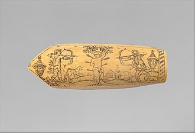 |
| arm pad复合词le comprimén.m.🇬🇧 arm pad | /'ɑ:m,pæd//kɔ̃pʁime/ | n. 椅子扶手上的小垫子 | a pad worn by football players and hockey goalkeepers | 3.2 |  |
| baseball cap复合词le bonnetn.m.🇬🇧 baseball cap | /ˈbeisbɔ:l kæp//bɔnɛ/ | 棒球帽 | a cap with a bill | 3.2 | |
| battle dress复合词le treillisn.m.🇬🇧 battle dress | /'bætl dres//tʁɛji/ | 战斗服 | a military uniform designed for field service | 3.2 |  |
| bed jacket复合词le blousonn.m.🇬🇧 bed jacket | /bed ˈdʒækit//bluzɔ̃/ | n. 短寝衣; 女睡衣短外套 | a lightweight jacket worn over bedclothes (as when sitting in bed) | 3.2 | |
| black tie复合词le smokingn.m.🇬🇧 black tie | /blæk tai//smɔkiŋ/ | n. 男子礼服的黑色领结, 男子的半正式礼服 | semiformal evening dress for men | 3.2 | |
| body suit复合词le justaucorpsn.m.🇬🇧 body suit | /'bɒdi sju:t. su:t//ʒystokɔʁ/ | 女式紧身衣裤 | a tight-fitting garment of stretchy material that covers the body from the shoulders to the thighs (and may have long sleeves or legs reaching down to the ankles); worn by ballet dancers and acrobats for practice or performance | 3.2 | |
| bow tie复合词le nœud papillonn.m.🇬🇧 bow tie | /bәu.bau tai//nø papijɔ̃/ | 蝴蝶结领结 | a man's tie that ties in a bow | 3.2 | |
| box coat复合词le manteaun.m.pl. manteaux🇬🇧 box coat | /bɔks kəut//mɑ̃to/ | n. 箱式带斗篷厚大衣 | a short coat that hangs loosely from the shoulders | 3.2 | |
| business suit复合词le completn.m.🇬🇧 business suit | /'biznis sju:t. su:t//kɔ̃plɛ/ | 普通服装 | a suit of clothes traditionally worn by businessmen | 3.2 |  |
| campaign hat复合词la quatre-bossesn.f.🇬🇧 campaign hat | /kæm'pein hæt//katʁ bɔs/ | （以前美国陆军及海军陆战队戴的）宽边毡帽 | a broad-brimmed felt hat with a high crown; formerly worn by the United States Army and Marine personnel | 3.2 | |
| cat suit复合词le justaucorpsn.m.🇬🇧 cat suit | /kæt sju:t//ʒystokɔʁ/ | n. 紧身运动衣 | a tight-fitting garment of stretchy material that covers the body from the shoulders to the thighs (and may have long sleeves or legs reaching down to the ankles); worn by ballet dancers and acrobats for practice or performance | 3.2 | |
| cloth cap复合词le bonnetn.m.🇬🇧 cloth cap | /klɔθ kæp//bɔnɛ/ | n. 布帽 | a flat woolen cap with a stiff peak | 3.2 |  |
| cocktail dress复合词le fourreaun.m.pl. fourreaux🇬🇧 cocktail dress | /ˈkɔkteil dres//fuʁo/ | n. （正式场合穿的）短裙 | a dress suitable for formal occasions | 3.2 |  |
| crash helmet复合词la casque de moton.f.🇬🇧 crash helmet | /kræʃ ˈhelmit//kask də mɔto/ | n. 头盔, 安全帽 | a padded helmet worn by people riding bicycles or motorcycles; protects the head in case of accidents | 3.2 | |
| derby hat复合词le chapeau melonn.m.🇬🇧 derby hat | /ˈdɜ:bi: hæt//ʃapo məlɔ̃/ | 常礼帽 | a felt hat that is round and hard with a narrow brim | 3.2 |  |
| dinner dress复合词la robe de cocktailn.f.🇬🇧 dinner dress | /'dinә dres//ʁɔb də kɔktɛl/ | 晚宴服; 简便女晚礼服 | a gown for evening wear | 3.2 | |
| dinner jacket复合词le smokingn.m.🇬🇧 dinner jacket | /ˈdinə ˈdʒækit//smɔkiŋ/ | 无尾礼服 | semiformal evening dress for men | 3.2 | |
| diving suit复合词la combinaison de plongéen.f.🇬🇧 diving suit | /ˈdaɪvɪŋ sju:t//kɔ̃binɛzɔ̃ də plɔ̃ʒe/ | n. 潜水服 | a weighted and hermetically sealed garment supplied with air; worn by underwater divers | 3.2 | |
| dress hat复合词la bièvren.f.🇬🇧 dress hat | /dres hæt//biɛvʁ/ | 大礼帽 | a man's hat with a tall crown; usually covered with silk or with beaver fur | 3.2 | |
| dress shirt复合词la chemise habilléen.f.🇬🇧 dress shirt | /dres ʃə:t//ʃmiz abije/ | n. 礼服用白衬衫, （有别于休闲式的）正式衬衫 | a man's white shirt (with a starch front) for evening wear (usually with a tuxedo) | 3.2 | |
| dress suit复合词l'habitn.m.🇬🇧 dress suit | /dres sju:t. su:t//abi/ | 燕尾服 | formalwear consisting of full evening dress for men | 3.2 |  |
| dress uniform复合词l'uniformen.f.🇬🇧 dress uniform | /dres 'ju:nifɒ:m//ynifɔʁm/ | 军装,军服 | a military uniform worn on formal occasions | 3.2 | |
| dust coat复合词la gabardinen.f.🇬🇧 dust coat | /dʌst kəut//gabaʁdin/ | 风衣 | a loose coverall (coat or frock) reaching down to the ankles | 3.2 | |
| ecclesiastical robe复合词la roben.f.🇬🇧 ecclesiastical robe | /ɪˌkliziˈæstɪkəl rob//ʁɔb/ | 法衣 | attire that is appropriate to wear in a church | 3.2 | |
| eye mask复合词la cache-œiln.f.🇬🇧 eye mask | /ai mɑ:sk//kaʃ œj/ | 眼膜 | a mask covering the upper part of the face but with holes for the eyes | 3.2 | |
| false face复合词la facen.f.🇬🇧 false face | /fɒ:ls feis//fas/ | 假面具 | a mask worn as part of a masquerade costume | 3.2 | |
| false hair复合词la perruquen.f.🇬🇧 false hair | /fɒ:ls hєә//peʁyk/ | na. 假发 | a covering or bunch of human or artificial hair used for disguise or adornment | 3.2 |  |
| fancy dress复合词la fête costuméen.f.🇬🇧 fancy dress | /'fænsi dres//fɛt kɔstyme/ | 化装舞会服装,奇装异服 | a costume worn as a disguise at a masquerade party | 3.2 | |
| flat cap复合词le bonnetn.m.🇬🇧 flat cap | /flæt kæp//bɔnɛ/ | = cloth cap | a flat woolen cap with a stiff peak | 3.2 | |
| football helmet复合词la casquen.f.🇬🇧 football helmet | /ˈfutbɔ:l ˈhelmit//kask/ | 橄榄球头盔 | a padded helmet with a face mask to protect the head of football players | 3.2 | |
| full skirt复合词la jupen.f.🇬🇧 full skirt | /ful skə:t//ʒyp/ | 宽下摆女裙 | a long skirt gathered at the waist | 3.2 | |
| fur coat复合词le manteau de fourruren.m.🇬🇧 fur coat | /fə: kəut//mɑ̃to də fuʁyʁ/ | 皮大衣 | a coat made of fur | 3.2 | |
| fur hat复合词la casquetten.f.🇬🇧 fur hat | /fә: hæt//kaskɛt/ | 裘皮帽 | a hat made of fur | 3.2 | |
| grass skirt复合词la jupen.f.🇬🇧 grass skirt | /græs skә:t//ʒyp/ | （太平洋岛屿上的跳舞者穿的）草裙 | a skirt made of long blades of grass | 3.2 | |
| gym suit复合词le completn.m.🇬🇧 gym suit | /dʒim sju:t. su:t//kɔ̃plɛ/ | 运动衣 | clothes prescribed for wear while participating in gymnastic exercise | 3.2 | |
| hair shirt复合词la cilicen.f.🇬🇧 hair shirt | /hɛə ʃə:t//silis/ | n. （苦行者穿的）刚毛衬衣 | an uncomfortable shirt made of coarse animal hair; worn next to the skin as a penance | 3.2 | |
| half mask复合词la masque de plongéen.f.🇬🇧 half mask | /hɑ:f mæsk//mask də plɔ̃ʒe/ | [化] 半罩面具 | a mask covering the upper part of the face but with holes for the eyes | 3.2 | |
| jump suit复合词le completn.m.🇬🇧 jump suit | /dʒʌmp sju:t//kɔ̃plɛ/ | n. 跳伞服，连身衣 | one-piece garment fashioned after a parachutist's uniform | 3.2 | |
| knee pad复合词la genouillèren.f.🇬🇧 knee pad | /ni: pæd//ʒənujɛʁ/ | n. 护膝 | protective garment consisting of a pad worn by football or baseball or hockey players | 3.2 | |
| lab coat复合词le manteaun.m.pl. manteaux🇬🇧 lab coat | /læb kəut//mɑ̃to/ | 实验工作服 | a light coat worn to protect clothing from substances used while working in a laboratory | 3.2 |  |
| laboratory coat复合词la blousen.f.🇬🇧 laboratory coat | /'læbrәtәri kәut//bluz/ | [化] 实验外衣 | a light coat worn to protect clothing from substances used while working in a laboratory | 3.2 | |
| liberty cap复合词le bonnetn.m.🇬🇧 liberty cap | /ˈlibəti kæp//bɔnɛ/ | n. 自由帽（一种无檐锥形帽, 原为古罗马被释放的奴隶所代, 18世纪法国大革命时期被用作自由的标志） | close-fitting conical cap worn as a symbol of liberty during the French Revolution and in the U.S. before 1800 | 3.2 | |
| life belt复合词la ceinture de sécuritén.f.🇬🇧 life belt | /laif belt//sɛ̃tyʁ də sekyʁite/ | 安全带 | belt attaching you to some object as a restraint in order to prevent you from getting hurt | 3.2 | |
| long johns复合词le sous-vêtements longsn.m.🇬🇧 long johns | /lɒŋ dʒɔnz//su vɛtmɑ̃ lɔ̃/ | n. 长内衣裤 | warm underwear with long legs | 3.2 | |
| lounge suit复合词la costumen.f.🇬🇧 lounge suit | /laundʒ sju:t//kɔstym/ | n. 普通西装 | a business suit consisting of a matching jacket and skirt or trousers | 3.2 | |
| mess jacket复合词le blousonn.m.🇬🇧 mess jacket | /mes ˈdʒækit//bluzɔ̃/ | n. 晚礼服 | waist-length jacket tapering to a point at the back; worn by officers in the mess for formal dinners | 3.2 | |
| military uniform复合词l'uniforme militairen.f.🇬🇧 military uniform | /ˈmilitəri ˈju:nifɔ:m//ynifɔʁm militɛʁ/ | 军装；军服 | prescribed identifying uniform for soldiers | 3.2 | |
| money belt复合词la courroien.f.🇬🇧 money belt | /ˈmʌni belt//kuʁwa/ | n. 可存放现金的腰带 | belt with a concealed section for holding money | 3.2 | |
| monkey jacket复合词le blousonn.m.🇬🇧 monkey jacket | /ˈmʌŋki ˈdʒækit//bluzɔ̃/ | n. 紧身短上衣 | waist-length jacket tapering to a point at the back; worn by officers in the mess for formal dinners | 3.2 | |
| morning coat复合词le fracn.m.🇬🇧 morning coat | /ˈmɔ:niŋ kəut//fʁak/ | 大礼服; 晨礼服 | a man's full-dress jacket with two long tapering tails at the back | 3.2 |  |
| morning dress复合词la jaquetten.f.🇬🇧 morning dress | /ˈmɔ:niŋ dres//ʒakɛt/ | n. （男式）常礼服 | formal attire for men during the daytime | 3.2 | |
| opera hat复合词la bièvren.f.🇬🇧 opera hat | /ˈɔpərə hæt//biɛvʁ/ | n. 男用礼帽 | a man's hat with a tall crown; usually covered with silk or with beaver fur | 3.2 | |
| opera hood复合词le banditn.m.🇬🇧 opera hood | /ˈɔpərə hud//bɑ̃di/ | n. 观剧用的女头巾 | a large cloak worn over evening clothes | 3.2 | |
| overseas cap复合词le calotn.m.🇬🇧 overseas cap | /ˌəuvəˈsi:z kæp//kalo/ | 软帽 | a wedge-shaped wool or cotton cap; worn as part of a uniform | 3.2 | |
| pants suit复合词le tailleur-pantalonn.m.🇬🇧 pants suit | /pænts sju:t. su:t//tajœʁpɑ̃talɔ̃/ | abbr. (=pantsuit) | a pair of pants and a matching jacket worn by women | 3.2 | |
| plug hat复合词le chapeau melonn.m.🇬🇧 plug hat | /plʌg hæt//ʃapo məlɔ̃/ | 高顶礼帽, 西式大礼帽 | a felt hat that is round and hard with a narrow brim | 3.2 |  |
| pressure suit复合词la combinaison pressuriséen.f.🇬🇧 pressure suit | /'preʃә sju:t. su:t//kɔ̃binɛzɔ̃ pʁesyʁize/ | 增压服 | protective garment consisting of an inflatable suit for space or high altitude flying | 3.2 | |
| riding habit复合词l'amazonen.f.🇬🇧 riding habit | /'raidiŋ 'hæbit//amazon/ | 女骑装 | attire that is typically worn by a horseback rider (especially a woman's attire) | 3.2 | |
| safety belt复合词la ceinture de sécuritén.f.🇬🇧 safety belt | /'seifti belt//sɛ̃tyʁ də sekyʁite/ | 安全带；[化] 安全带; 保险带 | belt attaching you to some object as a restraint in order to prevent you from getting hurt | 3.2 |  |
| safety hat复合词la casque de protection pour l'industrien.f.🇬🇧 safety hat | /'seifti hæt//kask də pʁɔtɛksjɔ̃ puʁ lɛ̃dystʁi/ | un. 安全帽 | a lightweight protective helmet (plastic or metal) worn by construction workers | 3.2 | |
| seat belt复合词la ceinture de sécuritén.f.🇬🇧 seat belt | /si:t belt//sɛ̃tyʁ də sekyʁite/ | 安全带 | a safety belt used in a car or plane to hold you in your seat in case of an accident | 3.2 | |
| service cap复合词le képin.m.🇬🇧 service cap | /ˈsɜːvɪs kæp//kepi/ | n. 军帽 | a cap with a flat circular top and a visor | 3.2 |  |
| shell jacket复合词la vareusen.f.🇬🇧 shell jacket | /ʃel 'dʒækit//vaʁøz/ | 紧身夹克衣 | waist-length jacket tapering to a point at the back; worn by officers in the mess for formal dinners | 3.2 | |
| short pants复合词le caleçonn.m.🇬🇧 short pants | /ʃɔ:t pænts//kalsɔ̃/ | n. 短裤 | trousers that end at or above the knee | 3.2 | |
| shoulder pad复合词le comprimén.m.🇬🇧 shoulder pad | /ˈʃəuldə pæd//kɔ̃pʁime/ | 轴肩衰减器 | protective garment consisting of a hard rounded pad worn by football players to protect their shoulders | 3.2 | |
| shower cap复合词le bonnet de douchen.m.🇬🇧 shower cap | /ˈʃauə kæp//bɔnɛ də duʃ/ | n. 淋浴时用的塑胶浴帽 | a tight cap worn to keep hair dry while showering | 3.2 | |
| silk hat复合词la bièvren.f.🇬🇧 silk hat | /silk hæt//biɛvʁ/ | n. （帽身呈圆筒形的）大礼帽 | a man's hat with a tall crown; usually covered with silk or with beaver fur | 3.2 |  |
| space helmet复合词la combinaison spatialen.f.🇬🇧 space helmet | /speis ˈhelmit//kɔ̃binɛzɔ̃ spasjal/ | 宇宙飞行帽 | a helmet worn by astronauts while in outer space | 3.2 | |
| sport coat复合词le blazern.m.🇬🇧 sport coat | /spɔ:t kəut//blazɛʁ/ | n. 运动服上装 | lightweight single-breasted jacket; often striped in the colors of a club or school | 3.2 | |
| sport jacket复合词le blazern.m.🇬🇧 sport jacket | /spɒ:t 'dʒækit//blazɛʁ/ | n. 男式运动衫 | lightweight single-breasted jacket; often striped in the colors of a club or school | 3.2 |  |
| sports coat复合词le blazern.m.🇬🇧 sports coat | /spɔ:ts kəut//blazɛʁ/ | n. 上衣外套 | lightweight single-breasted jacket; often striped in the colors of a club or school | 3.2 |  |
| string tie复合词le bolon.m.🇬🇧 string tie | /striŋ tai//bolo/ | n. 蝶形领结 | a very narrow necktie usually tied in a bow | 3.2 | |
| sun hat复合词la capelinen.f.🇬🇧 sun hat | /sʌn hæt//kaplin/ | n. 阔边防晒草帽, 阔边遮阳帽 | a hat with a broad brim that protects the face from direct exposure to the sun | 3.2 | |
| sun helmet复合词la casque colonialn.f.🇬🇧 sun helmet | /sʌn ˈhelmit//kask kɔlɔnjal/ | n. 硬防晒帽 | a lightweight hat worn in tropical countries for protection from the sun | 3.2 | |
| sweat pants复合词le caleçonn.m.🇬🇧 sweat pants | /swet pænts//kalsɔ̃/ | 长运动裤 | loose-fitting trousers with elastic cuffs; worn by athletes | 3.2 | |
| swimming cap复合词le bonnet de bainn.m.🇬🇧 swimming cap | /ˈswɪmɪŋ kæp//bɔnɛ də bɛ̃/ | n. 泳帽 | a tight-fitting cap that keeps hair dry while swimming | 3.2 | |
| swimming costume复合词le maillotn.m.🇬🇧 swimming costume | /'swimiŋ 'kɒstju:m//majo/ | 游泳衣 | tight fitting garment worn for swimming | 3.2 |  |
| tail coat复合词l'habitn.m.🇬🇧 tail coat | /teil kəut//abi/ | n. 燕尾服 | formalwear consisting of full evening dress for men | 3.2 | |
| tank suit复合词le completn.m.🇬🇧 tank suit | /tæŋk sju:t. su:t//kɔ̃plɛ/ | (无袖无领)单片背带式游泳衣 | a woman's one-piece bathing suit | 3.2 | |
| tank top复合词le débardeurn.m.🇬🇧 tank top | /tæŋk tɒp//debaʁdœʁ/ | 背心式上衣 | a tight-fitting sleeveless shirt with wide shoulder straps and low neck and no front opening; often worn over a shirt or blouse | 3.2 | |
| tin hat复合词la casquetten.f.🇬🇧 tin hat | /tin hæt//kaskɛt/ | n. 钢盔 | a lightweight protective helmet (plastic or metal) worn by construction workers | 3.2 | |
| top hat复合词la bièvren.f.🇬🇧 top hat | /tɒp hæt//biɛvʁ/ | 高顶黑色大礼帽 | a man's hat with a tall crown; usually covered with silk or with beaver fur | 3.2 |  |
| union suit复合词le completn.m.🇬🇧 union suit | /'ju:njәn sju:t. su:t//kɔ̃plɛ/ | 连衫裤 | an undergarment with shirt and drawers in one piece | 3.2 | |
| watch cap复合词le bonnet en tricotn.m.🇬🇧 watch cap | /wɔtʃ kæp//bɔnɛ ɑ̃ tʁiko/ | 导烟帽 | a knitted dark blue wool cap worn by seamen in cold or stormy weather | 3.2 | |
| wet suit复合词le completn.m.🇬🇧 wet suit | /wet sju:t//kɔ̃plɛ/ | n. 紧身潜水衣 | a close-fitting garment made of a permeable material; worn in cold water (as by skin divers) to retain body heat | 3.2 | |
| white tie复合词la cravaten.f.🇬🇧 white tie | /hwait tai//kʁavat/ | n. 小白领结 | bow tie worn as part of a man's formal evening dress | 3.2 | |
| wishing cap复合词le bonnetn.m.🇬🇧 wishing cap | /'wiʃiŋ kæp//bɔnɛ/ | 如愿帽（按迷信说法，戴上此帽即能如愿以偿） | a magical cap that secures whatever one wishes for | 3.2 |  |
| boale boan.m.🇬🇧 boa | /'bәuә//bɔa/ | n. 蟒蛇, 女用围巾, 羽毛围巾 | a long thin fluffy scarf of feathers or fur | 3.18 | |
| shawlla châlen.f.🇬🇧 shawl | /ʃɒ:l//ʃal/ | n. 披肩, 围巾 | cloak consisting of an oblong piece of cloth used to cover the head and shoulders | 3.17 | |
| skid lid复合词la paupièren.f.🇬🇧 skid lid | /skid lid//popjɛʁ/ | （自行车、滑板运动等中戴的）防撞头盔, 安全帽 | a crash helmet | 3.17 | |
| poke bonnet复合词la poke bonnetn.f.🇬🇧 poke bonnet | /pәuk 'bɒnit//pok bɔnɛ/ | 帽边朝前撑起的阔边女帽 | a hat tied under the chin | 3.16 | |
| wrapperle déshabillén.m.🇬🇧 wrapper | /'ræpә//dezabije/ | n. 包装者, 包裹者, 包装物, 覆盖物, 外包烟叶, 包纸, 书的封皮, 妇女晨衣 | a loose dressing gown for women | 3.16 | |
| hijable hijabn.m.🇬🇧 hijab | /hɪˈdʒɑ:b//iʒab/ | n. 穆斯林妇女戴的面纱或头巾 | a headscarf worn by Muslim women; conceals the hair and neck and usually has a face veil that covers the face | 3.15 | |
| nylon stocking复合词le basn.m.🇬🇧 nylon stocking | /'nailɔn ˈstɔkiŋ//ba/ | [医]尼龙袜 | women's stockings made from a sheer material (nylon or rayon or silk) | 3.15 | |
| prayer shawl复合词la châlen.f.🇬🇧 prayer shawl | /prєә. 'preiә ʃɒ:l//ʃal/ | =tallith | (Judaism) a shawl with a ritually knotted fringe at each corner; worn by Jews at morning prayer | 3.15 | |
| bulletproof vest复合词le gilet pare-ballesn.m.🇬🇧 bulletproof vest | /ˈbʊlɪtˌpruf vɛst//ʒilɛ paʁ bal/ | [医]防弹背心 | a vest capable of resisting the impact of a bullet | 3.13 | |
| mink coat复合词le visonn.m.🇬🇧 mink coat | /mɪŋk kəut//vizɔ̃/ | n. 貂皮大衣 | fur coat made from the soft lustrous fur of minks | 3.12 |  |
| tuxedole smokingn.m.🇬🇧 tuxedo | /tʌk'si:dәu//smɔkiŋ/ | n. 无尾礼服, 男小礼服 | semiformal evening dress for men | 3.11 |  |
| ironingle repassagen.m.🇬🇧 ironing | /'aiәniŋ//ʁəpasaʒ/ | n. 熨烫 | garments (clothes or linens) that are to be (or have been) ironed | 3.1 | |
| liveryla livréen.f.🇬🇧 livery | /'livәri//livʁe/ | n. 制服, 侍从 | uniform worn by some menservants and chauffeurs | 3.1 | |
| ascotl'ascotn.m.🇬🇧 ascot | /'æskәt//asko/ | n. 领巾状领带；（大写）英国阿斯科特赛马会 | a cravat with wide square ends; secured with an ornamental pin | 3.06 | |
| feather boa复合词le boan.m.🇬🇧 feather boa | /ˈfeðə ˈbəʊə//bɔa/ | n. 女用长围巾 | a long thin fluffy scarf of feathers or fur | 3.06 |  |
| sarile sarin.m.🇬🇧 sari | /'sɑ:ri://saʁi/ | n. 莎丽(印度妇女用的裹身布) | a dress worn primarily by Hindu women; consists of several yards of light material that is draped around the body | 3.06 |  |
| corsetle corsetn.m.🇬🇧 corset | /'kɒ:sit//kɔʁsɛ/ | n. 紧身褡, 妇女的胸衣 | a woman's close-fitting foundation garment | 3.03 | |
| ao dai复合词le áo dàin.m.🇬🇧 ao dai | /ˈaʊdaɪ, ˈɔ://áo dɛ/ | 袄代（越南妇女的一种传统服装，两边开叉的束腰长袍，穿在宽松的裤子外边） | the traditional dress of Vietnamese women consisting of a tunic with long sleeves and panels front and back; the tunic is worn over trousers | 3.02 | |
| chinole chinon.m.🇬🇧 chino | /'tʃi:nәu//ʃino/ | n. 斜纹棉布裤；丝光斜纹棉布 | trousers made with chino cloth | 3.02 | |
| furnishingl'accoutrementn.m.🇬🇧 furnishing | /'fә:niʃiŋ//akutʁəmɑ̃/ | n. 家具, 服饰品, 陈设品, 设备 | (usually plural) accessory wearing apparel | 3.02 | |
| garble revêtirn.m.🇬🇧 garb | /gɑ:b//ʁəvɛtiʁ/ | n. 打扮, 装束 | clothing of a distinctive style or for a particular occasion | 3.01 | |
| swimwearle maillotn.m.🇬🇧 swimwear | /ˈswɪmweə(r)//majo/ | n. 游泳衣 | tight fitting garment worn for swimming | 3.01 |  |
| beaniela beanien.f.🇬🇧 beanie | /'bi:ni//beani/ | n. (大学一年级男生或儿童等戴的)无檐小便帽 | a small skullcap; formerly worn by schoolboys and college freshmen | 2.99 | |
| tiarala tiaren.f.🇬🇧 tiara | /ti'ɑ:rә//tjaʁ/ | n. 冕状头饰 | a jeweled headdress worn by women on formal occasions | 2.98 | |
| pantyle slipn.m.🇬🇧 panty | /'pænti//slip/ | n. 女裤；童裤（等于panties） | short underpants for women or children (usually used in the plural) | 2.97 | |
| kimonole kimonon.m.🇬🇧 kimono | /ki'mәunәu//kimɔno/ | n. 和服, (妇女穿着的)宽大晨衣 | a loose robe; imitated from robes originally worn by Japanese | 2.95 | |
| turbanle turbann.m.🇬🇧 turban | /'tә:bәn//tyʁbɑ̃/ | n. (穆斯林的)头巾 | a traditional Muslim headdress consisting of a long scarf wrapped around the head | 2.95 | |
| beretle bonnetn.m.🇬🇧 beret | /'berei//bɔnɛ/ | n. 贝雷帽 | a cap with no brim or bill; made of soft cloth | 2.92 | |
| mendingla maintenance correctiven.f.🇬🇧 mending | /'mendiŋ//mɛ̃tnɑ̃s kɔʁɛktiv/ | n. 修补工作 | garments that must be repaired | 2.92 | |
| underpantsle bobettesn.m.🇬🇧 underpants | /'ʌndәpænts//bob/ | n. 衬裤, 短衬裤 | an undergarment that covers the body from the waist no further than to the thighs; usually worn next to the skin | 2.92 | |
| sportswearle vêtement de sportn.m.🇬🇧 sportswear | /'spɒ:tswєә//vɛtmɑ̃ də spɔʁ/ | n. 运动装, 休闲服 | attire worn for sport or for casual wear | 2.9 | |
| slacksle falzarn.m.🇬🇧 slacks | /slæks//falzaʁ/ | n. 宽松的裤子, 便裤 | (usually in the plural) pants for casual wear | 2.89 | |
| undiesle dessousn.m.🇬🇧 undies | /'ʌndiz//dəsu/ | n. 内衣 | women's underwear | 2.89 |  |
| frockle frockn.m.🇬🇧 frock | /frɒk//fʁok/ | n. 女礼服, 连衣裙, 工装, 罩袍, 僧衣 | a habit worn by clerics | 2.88 | |
| kiltle kiltn.m.🇬🇧 kilt | /kilt//kilt/ | n. 苏格兰式短裙 | a knee-length pleated tartan skirt worn by men as part of the traditional dress in the Highlands of northern Scotland | 2.88 | |
| nappyla couchen.f.🇬🇧 nappy | /'næpi//kuʃ/ | n. 尿布, 菜盆 | garment consisting of a folded cloth drawn up between the legs and fastened at the waist; worn by infants to catch excrement | 2.88 | |
| headgearla couvre-chefn.f.🇬🇧 headgear | /'hedgiә//kuvʁəʃɛf/ | n. 头饰, 马首挽具, 井架 | clothing for the head | 2.86 | |
| tuxle smokingn.m.🇬🇧 tux | /tʌks//smɔkiŋ/ | n. 夜小礼服, 无尾夜常礼服 | semiformal evening dress for men | 2.83 |  |
| pajamale pyjaman.m.🇬🇧 pajama | /pә'dʒɑ:mә,-'dʒæ-//piʒama/ | n. 睡衣裤, 宽松裤 | a pair of loose trousers tied by a drawstring around the waist; worn by men and women in some Asian countries | 2.81 | |
| ponchole ponchon.m.🇬🇧 poncho | /'pɒntʃәu//pɔ̃tʃo/ | n. 南美披风, 雨披 | a blanket-like cloak with a hole in the center for the head | 2.79 | |
| overcoatla capoten.f.🇬🇧 overcoat | /'әuvәkәut//kapɔt/ | n. 外套大衣 | a heavy coat worn over clothes in winter | 2.77 | |
| parkal'anorakn.m.🇬🇧 parka | /'pɑ:kә//anɔʁak/ | n. 皮制连帽大衣, 派克大衣 | a kind of heavy jacket (`windcheater' is a British term) | 2.76 | |
| togala togen.f.🇬🇧 toga | /'tәugә//tɔʒ/ | n. 宽外袍, 参议员的职位 | a one-piece cloak worn by men in ancient Rome | 2.73 | |
| muffle manchonn.m.🇬🇧 muff | /mʌf//mɑ̃ʃɔ̃/ | n. 暖手筒, 笨人, 接球失误 | a warm tubular covering for the hands | 2.7 | |
| bathrobele peignoirn.m.🇬🇧 bathrobe | /'bɑ:θrәub//pɛɲwaʁ/ | n. 浴衣 | a loose-fitting robe of towelling; worn after a bath or swim | 2.68 | |
| bolole bolon.m.🇬🇧 bolo | /'bәulәu//bolo/ | n. 大砍刀 | a cord fastened around the neck with an ornamental clasp and worn as a necktie | 2.68 | |
| busbyle shakon.m.🇬🇧 busby | /'bʌzbi//sako/ | n. 毛皮制高帽子 | tall hat; worn by some British soldiers on ceremonial occasions | 2.68 | |
| pontifical兼类词le pontificaln.m.pl. pontificaux🇬🇧 pontifical | /pɒn'tifikl//pɔ̃tifikal/ | n. 主教全套服饰, 主教仪典 | the vestments and other insignia of a pontiff (especially a bishop) | 2.68 | |
| raincoatl'impern.m.🇬🇧 raincoat | /'reinkәut//ɛ̃pɛʁ/ | n. 雨衣 | a water-resistant coat | 2.68 |  |
| breechesle caleçonn.m.🇬🇧 breeches | /'britʃiz//kalsɔ̃/ | n. 马裤 | trousers ending above the knee | 2.67 | |
| singletle giletn.m.🇬🇧 singlet | /'siŋglit//ʒilɛ/ | n. 汗衫, 运动衫 | a collarless men's undergarment for the upper part of the body | 2.67 | |
| bolale bolon.m.🇬🇧 bola | /'bәulә//bolo/ | n. 流星锤（捕牛时使用的）；两端系有铅坠的绳子（等于bolas） | a cord fastened around the neck with an ornamental clasp and worn as a necktie | 2.65 | |
| headscarfle foulardn.m.🇬🇧 headscarf | /ˈhedskɑ:f//fulaʁ/ | n. 女人的头巾 | a kerchief worn over the head and tied under the chin | 2.65 | |
| petticoatla combinaisonn.f.🇬🇧 petticoat | /'petikәut//kɔ̃binɛzɔ̃/ | n. 衬裙, 裙子 | undergarment worn under a skirt | 2.63 | |
| sareele sarin.m.🇬🇧 saree | /'sɑ:ri:, -ri//saʁi/ | n. 莎丽服 | a dress worn primarily by Hindu women; consists of several yards of light material that is draped around the body | 2.63 | |
| albl'auben.f.🇬🇧 alb | /ælb//ob/ | n. 圣职人员的白长袍 | a white linen liturgical vestment with sleeves; worn by priests | 2.62 | |
| bodicele corsagen.m.🇬🇧 bodice | /'bɒdis//kɔʁsaʒ/ | n. 女服的紧身上衣 | part of a dress above the waist | 2.62 | |
| turtleneckle col roulén.m.🇬🇧 turtleneck | /'tә:tlnek//kɔl ʁule/ | n. 圆翻领, 高翻领毛衣 | a sweater or jersey with a high close-fitting collar | 2.62 | |
| burkale bourkan.m.🇬🇧 burka | /'bә:kә//byʁka/ | n. (穆斯林女子在公众场合下穿的)蒙住全身(只留眼睛)的长袍 | a loose garment (usually with veiled holes for the eyes) worn by Muslim women especially in India and Pakistan | 2.59 | |
| capotela capoten.f.🇬🇧 capote | /kә'pәut//kapɔt/ | n. 带风帽的长大衣 | a long overcoat with a hood that can be pulled over the head | 2.59 | |
| burqale bourkan.m.🇬🇧 burqa | /'bɜ:kə//byʁka/ | n. 布卡（伊斯兰国家妇女穿的蒙面长袍） | a loose garment (usually with veiled holes for the eyes) worn by Muslim women especially in India and Pakistan | 2.58 | |
| raglanle raglann.m.🇬🇧 raglan | /'ræglәn//ʁaglɑ̃/ | n. 套袖大衣 | a garment (coat or sweater) that has raglan sleeves | 2.58 | |
| outerwearl'outerwearn.m.🇬🇧 outerwear | /'ajtәweә(r)//yteʁweaʁ/ | n. 外衣, 外套 | clothing for use outdoors | 2.57 |  |
| smockla gabardinen.f.🇬🇧 smock | /smɒk//gabaʁdin/ | n. 工作服, 罩衫, 长罩衣 | a loose coverall (coat or frock) reaching down to the ankles | 2.57 | |
| knitwearle knitwearn.m.🇬🇧 knitwear | /'nit,weә//knitweaʁ/ | n. 针织品 | knitted clothing | 2.56 | |
| necktiela cravaten.f.🇬🇧 necktie | /'nektai//kʁavat/ | n. 领带 | neckwear consisting of a long narrow piece of material worn (mostly by men) under a collar and tied in knot at the front | 2.55 | |
| nightgownl'une chemise de nuitn.f.🇬🇧 nightgown | /yn ʃmiz də nɥi/ | n. 女式睡衣, 孩子穿的睡衣, 妇女穿的睡衣 | lingerie consisting of a loose dress designed to be worn in bed by women | 2.55 | |
| coronetle coronetn.m.🇬🇧 coronet | /'kɒrәnit//koʁonɛ/ | n. 冠, 小冠冕, 冠状头饰 | a small crown; usually indicates a high rank but below that of sovereign | 2.54 | |
| leotardle justaucorpsn.m.🇬🇧 leotard | /'li:әutɑ:d//ʒystokɔʁ/ | n. 紧身衣 | a tight-fitting garment of stretchy material that covers the body from the shoulders to the thighs (and may have long sleeves or legs reaching down to the ankles); worn by ballet dancers and acrobats for practice or performance | 2.54 | |
| fatiguesle fatiguesn.m.🇬🇧 fatigues | /fəˈti:ɡz//fatig/ | n. 疲劳( fatigue的名词复数 ); <军>杂役; 厌倦; （士兵穿的）工作服 | military uniform worn by military personnel when doing menial labor | 2.53 | |
| balaclavala cagoulen.f.🇬🇧 balaclava | /bælә'klɑ:vә//kagul/ | n. 巴拉克拉法帽 | a cap that is close-fitting and woolen and covers all of the head but the face | 2.51 | |
| hosieryle tuyaun.m.pl. tuyaux🇬🇧 hosiery | /'hәjziәri, 'hәjʒәri//tɥijo/ | n. 袜, 内衣裤 | socks and stockings and tights collectively (the British include underwear) | 2.51 | |
| niqable niqabn.m.🇬🇧 niqab | /nɪ'kɑ:b//niqab/ | n. 尼卡布（一些穆斯林妇女在公共场合戴的面纱，通常露出眼睛） | a face veil covering the lower part of the face (up to the eyes) worn by observant Muslim women | 2.51 | |
| mittenle gantn.m.🇬🇧 mitten | /'mitn//gɑ̃/ | n. 连指手套, 拳击手套 | glove that encases the thumb separately and the other four fingers together | 2.48 | |
| fineryle fineryn.m.🇬🇧 finery | /'fainәri//fineʁi/ | n. (华丽的)装饰, (华丽的)服饰, 鲜艳服装, 幽雅, 精炼炉 | elaborate or showy attire and accessories | 2.46 | |
| slickerle cirén.m.🇬🇧 slicker | /'slikә//siʁe/ | n. 防水衣, 雨衣, 骗子 | a macintosh made from cotton fabric treated with oil and pigment to make it waterproof | 2.46 | |
| nylonsle nylonn.m.🇬🇧 nylons | /'nailɒns//nilɔ̃/ | n. 尼龙长袜 | women's stockings made from a sheer material (nylon or rayon or silk) | 2.45 |